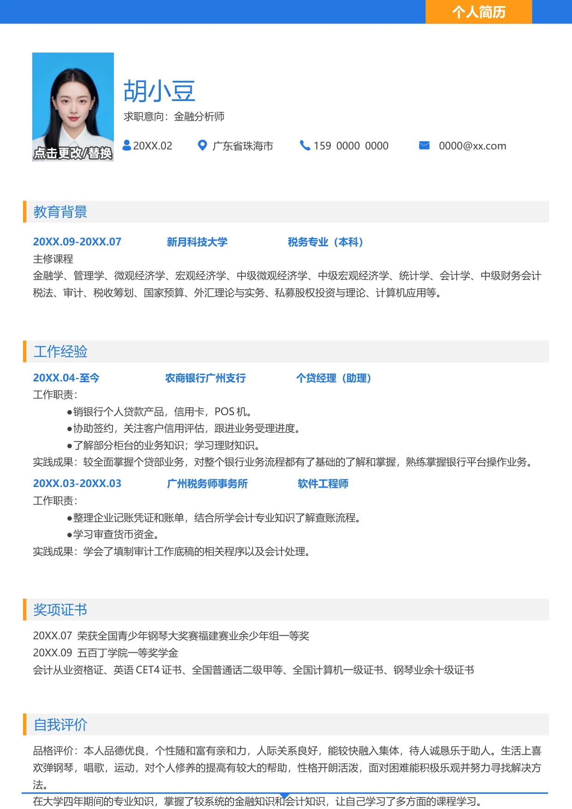

教育背景
20XX.09-20XX.07 新月科技大学 税务专业（本科）
主修课程
金融学、管理学、微观经济学、宏观经济学、中级微观经济学、中级宏观经济学、统计学、会计学、中级财务会计
税法、审计、税收筹划、国家预算、外汇理论与实务、私募股权投资与理论、计算机应用等。
个人简历
求职意向：金融分析师
胡小豆
20XX.02 广东省珠海市 159 0000 0000 0000@xx.com
工作经验
20XX.04-至今 农商银行广州支行 个贷经理（助理）
工作职责：
•
销银行个人贷款产品，信用卡，POS 机。
•
协助签约，关注客户信用评估，跟进业务受理进度。
•
了解部分柜台的业务知识；学习理财知识。
实践成果：较全面掌握个贷部业务，对整个银行业务流程都有了基础的了解和掌握，熟练掌握银行平台操作业务。
20XX.03-20XX.03 广州税务师事务所 软件工程师
工作职责：
•
整理企业记账凭证和账单，结合所学会计专业知识了解查账流程。
•
学习审查货币资金。
实践成果：学会了填制审计工作底稿的相关程序以及会计处理。
自我评价
品格评价：本人品德优良，个性随和富有亲和力，人际关系良好，能较快融入集体，待人诚恳乐于助人。生活上喜
欢弹钢琴，唱歌，运动，对个人修养的提高有较大的帮助，性格开朗活泼，面对困难能积极乐观并努力寻找解决方
法。
在大学四年期间的专业知识，掌握了较系统的金融知识和会计知识，让自己学习了多方面的课程学习。
奖项证书
20XX.07 荣获全国青少年钢琴大奖赛福建赛业余少年组一等奖
20XX.09 五百丁学院一等奖学金
会计从业资格证、英语CET4 证书、全国普通话二级甲等、全国计算机一级证书、钢琴业余十级证书